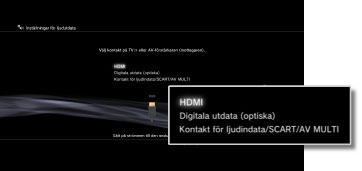
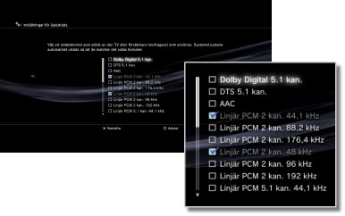
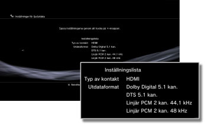

Inställningar > Ljudinställningar > Inställningar för ljudutdata
Inställningar för ljudutdata
Justera systemets inställningar för ljudutdata. De här inställningarna används huvudsakligen när systemet är anslutet till ljudenheter med funktioner för digital ljudutgång, t.ex. AV-förstärkare (mottagare) för hemmaunderhållningssystem.
1. |
Bekräfta formaten som kan användas med ljudenheten. |
|||||||||||||||||||||||
|---|---|---|---|---|---|---|---|---|---|---|---|---|---|---|---|---|---|---|---|---|---|---|---|---|
2. |
Välj |
|||||||||||||||||||||||
3. |
Välj [Inställningar för ljudutdata]. |
|||||||||||||||||||||||
4. |
Välj ingången på ljudenheten. Kanalnummer och ljudformat som kan användas kan variera beroende på vilken kontakt som används. 
|
|||||||||||||||||||||||
5. |
Välj ljudutgångsformat.  |
|||||||||||||||||||||||
6. |
Kontrollera inställningarna.  |
|||||||||||||||||||||||
7. |
Spara inställningarna. |
|||||||||||||||||||||||

 .
.Tips!
- [Linjär PCM 2 kan.]-ljud ställs som standard in för utmatning ur alla utgångar. Om du ändrar inställningen för ljudutdata kommer ljudet endast att matas ut ur de kontakter som ställts in.
- Om du ändrar inställningarna för ljudutdata kommer systemet inte längre att kunna mata ut ljud ur flera utgångar samtidigt. Om ditt system exempelvis är anslutet till en TV via en HDMI-kabel och till en ljudenhet via en digital, optisk kabel, och du växlar över till [Digital Out (Optical)] under [Inställningar för ljudutdata], kommer det inte att matas ut något ljud ur din TV. Växla till [HDMI] för att mata ut ljud från TV:n, eller välj
 (Inställningar) >
(Inställningar) >  (Ljudinställningar) > [Multi-ljudutdata], och ställ alternativet på [På].
(Ljudinställningar) > [Multi-ljudutdata], och ställ alternativet på [På]. - Om du väljer [Linjär PCM 2 kan. 88,2 kHz] eller [Linjär PCM 2 kan. 176,4 kHz] i steg 5, kan det hända att ljudet avbryts, eller så sänds det inte ut i vissa ljudenheter.
- Vid användning av en HDMI-kabel, kommer endast [Linjär PCM 2 kan.]-ljud att matas ut från PlayStation®2 och PlayStation®-programvara. För att mata ut Dolby Digital- eller DTS-ljud, måste du ansluta PS3™-systemet och ljudenheten med en digital optisk kabel och ändra till [Digitala utdata (optiska)] under [Inställningar för ljudutdata].
- Om man ansluter en enhet som inte är kompatibel med standarden HDCP (High-bandwidth Digital Content Protection) till systemet med en HDMI-kabel, kan man inte mata ut video eller ljud ur systemet.
Viktig information
- Vissa PlayStation®2- eller PlayStation®-programvarutitlar kan spelas upp annorlunda på PS3™-systemet än de gör på PlayStation®2- och PlayStation®-systemen, eller inte spelas upp korrekt på PS3™-systemet.
- PlayStation®2-programvaran kan inte heller spelas på vissa PS3™-system. För mer information, se [Olika typer av uppspelningsbara skivor], besök SCE-webbsidan för ditt land eller läs dokumentationen som följde med ditt PS3™-system.